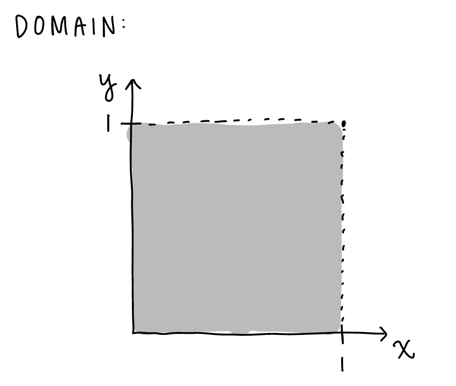
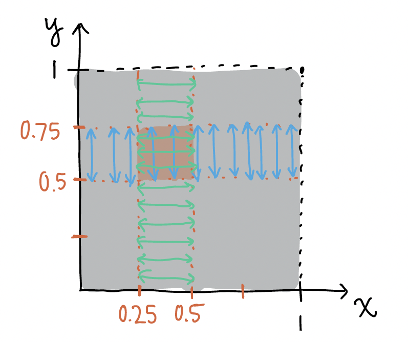
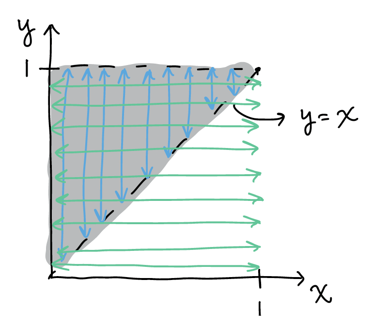
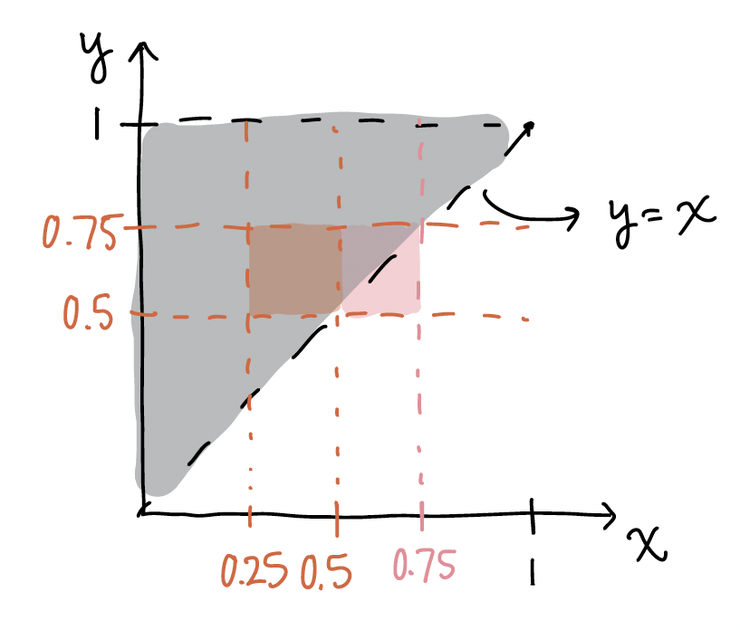

Muddy Points
Chapter 28 revisited: Expected Values of Joint distributions
Muddy points from Fall 2023:
2. How do we set the bounds on a double integral?
When the domain of the RVs are not dependent on each other, then we use the bounds as is. In example 2 of Chapter 26 notes, we have the joint pdf \(f_{X,Y}(x,y)= 18 x^2 y^5\), for\(0 \leq x \leq 1, \ 0 \leq y \leq 1\). If we wanted to calculate something like \(E(X)\), then we could use the bounds as they are. Below is the domain for \(x\) and \(y\):

Here is the integral for the expected value where we integrate over the whole domain of \(x\) and \(y\):
\[ E(X) = \displaystyle\int_0^1 \displaystyle\int_0^1 x (18 x^2 y^5 )dy dx \]If we want to find the probability \(P(0.25 \leq X \leq 0.5, 0.5 \leq Y \leq 0.75)\), then we can look at the specific values of the probability:

Note the blue lines above indicate how we integrate over \(y\) first from 0.5 to 0.75 and the green lines indicate how integrate over \(x\) first from 0.25 to 0.5. It seems like we’ve integrated over an area that isn’t within our specified probability. However, the integrated area is ONLY the overlap of the \(x\) and \(y\) bounds for the probability.
\[P(0.25 \leq X \leq 0.5, 0.5 \leq Y \leq 0.75) = \displaystyle\int_{0.25}^{0.5} \displaystyle\int_{0.5}^{0.75} 18 x^2 y^5 dy dx\]
Let’s use the same pdf, but now the domain of the two RVs is dependent on one another. We have the joint pdf \(f_{X,Y}(x,y)= 18 x^2 y^5\), for\(0 \leq x \leq y\leq1\)
If we wanted to calculate something like \(E(X)\), then we need to account for fact that \(x\) must be less than of equal to \(y\). We can look back at the domain for this:

Note the blue lines above still indicate how we integrate over \(y\) first from \(x\) to 1, and the green lines indicate how integrate over \(x\) first from 0 to 1. Once again, it seems like we’ve integrated over an area that isn’t within the domain. However, the integrated area is ONLY the overlap of the \(x\) and \(y\) bounds. Thus, once we’ve restricted \(y\) to the area between \(x\) and 1, we no longer need to restrict \(x\) to the are of 0 to \(y\).
\[ E(X) = \displaystyle\int_0^1 \displaystyle\int_x^1 x (18 x^2 y^5 )dy dx \] If we want to find the probability \(P(0.25 \leq X \leq 0.5, 0.5 \leq Y \leq 0.75)\), then we should look back at our domain. For now, we are focusing on the orange area:

Because the orange area is totally within our domain, we can leave our integral our bounds as the exact values we specified:
\[P(0.25 \leq X \leq 0.5, 0.5 \leq Y \leq 0.75) = \displaystyle\int_{0.25}^{0.5} \displaystyle\int_{0.5}^{0.75} 18 x^2 y^5 dy dx\]
However, if we want the probability \(P(0.5 \leq X \leq 0.75, 0.5 \leq Y \leq 0.75)\), we would focus on the pink area above. We would limit one of our integrals to the \(y=x\) equation:
\[P(0.5 \leq X \leq 0.75, 0.5 \leq Y \leq 0.75) = \displaystyle\int_{0.5}^{0.75} \displaystyle\int_{x}^{0.75} 18 x^2 y^5 dy dx\]
OR
\[P(0.5 \leq X \leq 0.75, 0.5 \leq Y \leq 0.75) = \displaystyle\int_{0.5}^{0.75} \displaystyle\int_{0.5}^{y} 18 x^2 y^5 dx dy\]
The key to these probabilities is that the bounds with the other variable is on the inside integral! Otherwise we end up with a answer that includes a RV.